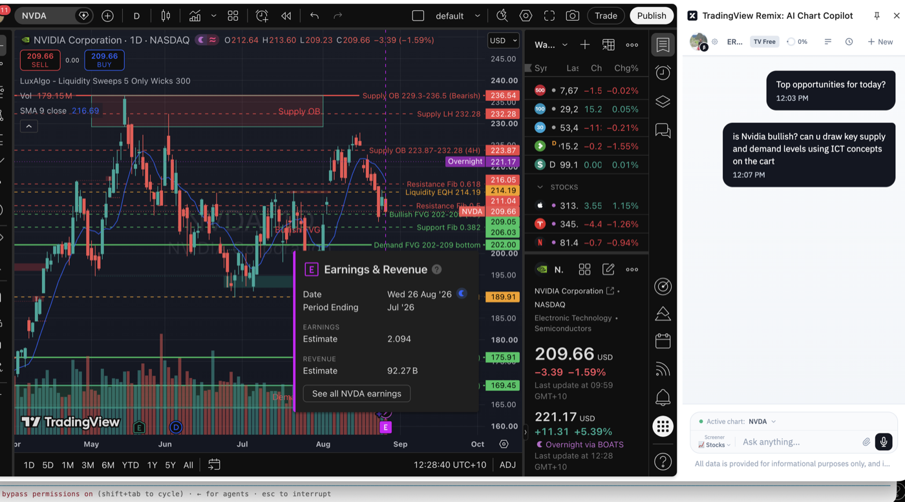

Free tool · quick guideFree · open for all · no code
Just talk to your chart.
I spent months wiring an AI into my charts the hard way — Claude plugged into TradingView through a custom bridge. TradingView just shipped it as a one-click browser copilot. Ask your chart a question and it reads your indicators, thinks, and draws the answer right on the candles.
Set it up — 5 steps
Install the extension — add TradingView Chart Copilot from the link at the bottom (it's a browser extension, in public beta).
Open any TradingView chartGo to tradingview.com and open a symbol — no desktop app install needed.
Click the extension iconThe copilot docks as a panel on the right of your chart.
Sign in to your Copilot accountSign in when prompted to activate it.
Start your analysis — type in the “Ask anything…” box and it goes to work.
Chrome / Edge / Brave / OperaWorks on the free tierBeta — daily usage may be limited
Example prompts to try
“Top opportunities for today?”Watchlist scan
“Is Nvidia bullish? Draw the key supply & demand levels using ICT concepts on the chart.”Draws on the chart
“Give me a technical breakdown — moving averages, RSI, MACD, key support & resistance.”Technical read
“Set alerts at the key support and resistance levels.”Creates alerts by chat
“List my current alerts and clean up the ones that already triggered.”Manages alerts
“What's driving the price today — any news or earnings?”Catalysts
“Scan my watchlist for stocks at 52-week highs, filtered by volume.”Screener in chat
Sample output

📊 Ask “draw supply & demand using ICT” → the copilot marks the order blocks, FVGs and liquidity right on the candles.
Ask in plain English on the right; the copilot marks the supply/demand order blocks, fair-value gaps and liquidity directly on the NVDA chart.
Why this is a big deal
🧩 It replaces a whole DIY AI rig
Getting an AI to see and draw on a live chart used to mean running a local model bridge, an MCP server, API keys and a desktop app all talking to each other. Now it's a browser extension — no install beyond the add-on, and it works on the free tier. The barrier just went to zero.
Try the AI Chart Copilot — free.
Straight from TradingView. Install the extension, open a chart, start asking.
AI Chart Copilot is a TradingView product (currently in public beta) — not affiliated with Cloud9. I just think it's the fastest way to get AI onto your chart, so I'm pointing you to it.